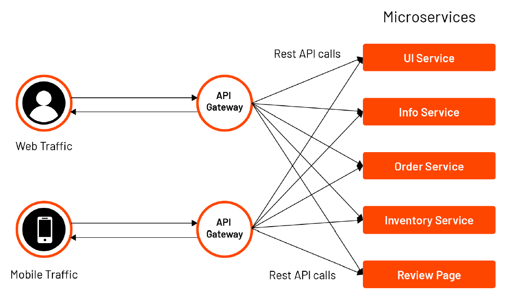

API Gateway
Overview
This project is an API Gateway built using Starlette and HTTPX. It is currently in the MVP stage, focusing on basic routing functionalities.
About API gateway
check out RedHat docs to understand the usage.

Features
- Routing: Directs incoming requests to the appropriate backend services.
Planned Features
- CI/CD: Test and build image on push or merge with main.
- Dynamic Middleware: Allows for dynamic addition and removal of middleware.
- Firewall: Basic firewall functionalities to secure the gateway.
- Database Configuration: Configures and manages database connections.
- Observations: Tracks and logs requests for monitoring and debugging.
- Authentication and Authorization: Implement security measures to control access to services.
- Rate Limiting: Add functionality to limit the number of requests a client can make.
- Load Balancing: Distribute incoming requests across multiple instances of a service.
- Caching: Store responses to reduce load on backend services.
Technologies Used
Starlette: A lightweight ASGI framework/toolkit. HTTPX: An HTTP client for Python.
Getting Started
Prerequisites
- Docker
Installation
-
Clone the repository:
-
Create a settings file: Create a file named
prod.pyin the settings directory with the necessary configuration settings. - Run with Docker:
Usage
Once the application is running, you can access the API Gateway at http://localhost:8000.
Configuration
- prod.py: This file should contain all the necessary configuration settings for the application.
Contributing
We welcome contributions! Please follow these steps:
- Fork the repository.
- Create a new branch (git checkout -b feature-branch).
- Make your changes.
- Commit your changes (git commit -m 'Add new feature').
- Push to the branch (git push origin feature-branch).
- Open a pull request.
Areas for Contribution
- Fixing Cookies and CSRF Tokens: Secure handling of cookies and CSRF tokens.
- Implementing Planned Features: Work on any of the planned features listed above.
- Reporting any Issue: Submit any issue you see.
License
This project is licensed under the MIT License. See the LICENSE file for details.
Contact
For any questions or support, please contact the maintainer at aminmasoudi2003@gmail.com.